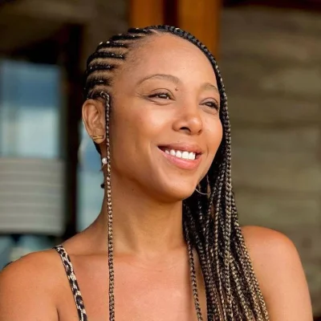

Negra Li
45 anos
45 anos
NEGRA LI. In: WIKIPÉDIA, a enciclopédia livre. Flórida: Wikimedia Foundation, 2024. Disponível em: https://pt.wikipedia.org/w/index.php?title=Negra_Li&oldid=68667240 Acesso em: 21 set. 2024.
Liliane de Carvalho (São Paulo, 17 de setembro de 1979), conhecida como Negra Li, é uma cantora, rapper, compositora e atriz brasileira, considerada um dos principais nomes femininos do rap nacional. Nascida na Brasilândia, Zona Norte de São Paulo, começou a cantar ainda na infância em corais e igrejas, inspirando-se em Whitney Houston e na black music.
Negra Li iniciou sua carreira em 1996 com o grupo de rap RZO e lançou seu primeiro álbum solo em 2005, em parceria com Helião. Destacou-se no filme Antônia (2006), que deu origem a um seriado homônimo, e em 2014 protagonizou o musical Jesus Christ Superstar como Maria Madalena. Ao longo da carreira, firmou parcerias com artistas como Caetano Veloso, Akon, Charlie Brown Jr., Nando Reis, Skank e Projota.
Seu segundo álbum solo, Tudo de Novo (2012), apresentou forte influência de soul e R&B. Em 2023, gravou "Vai Dar Certo", tema de abertura da novela Vai na Fé, e participou do Prêmio Sim à Igualdade Racial, ao lado de artistas como Linn da Quebrada e Liniker. Negra Li é casada com Junior Dread e tem uma filha, Sofia.